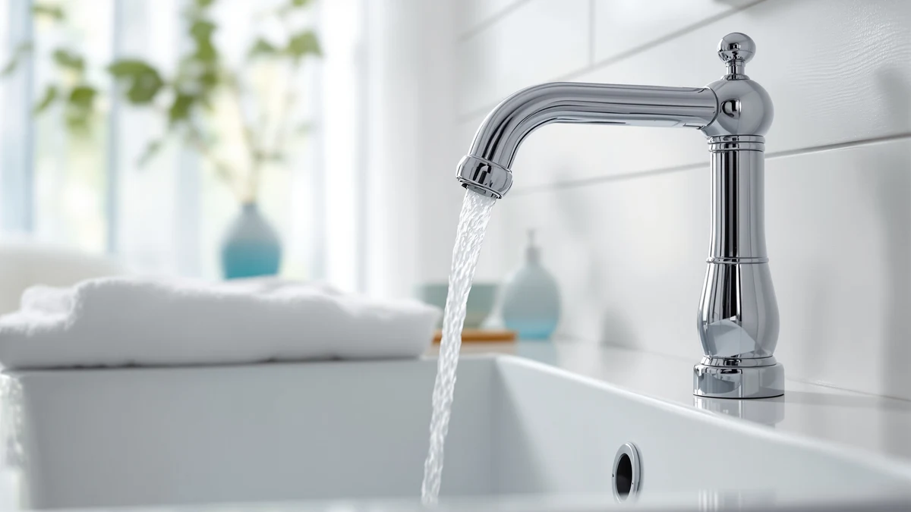

Best Bathroom Faucets Without Plastic Parts of 2026: 7 Top Picks
Prices and picks verified as of July 2026. Independent, reader-supported reviews.


Quick Answer
The best bathroom faucets without plastic parts use a solid brass body and metal handles instead of the zinc-and-plastic cores that fill most store shelves. After comparing seven models, we rank the Pfister Sonterra first because it combines a brass build, a fingerprint-resistant Spot Defense finish, and a lifetime warranty at a fair $79. If you want to spend less, the $23.38 Fransiton gets you a brass body without the extras.
Our pick: Pfister Sonterra Bathroom Sink Faucet — $79.00 Check Price on Amazon
Bottom line: our top pick is the Pfister Sonterra Bathroom Sink Faucet 4 inch Centerset at $79. The best budget option is the 3pcs Hot and Cold Water Faucet Indicator Compatible with at $5.49.
Things to Know Before You Buy
- Weight tells you a lot. A brass-body faucet feels heavy in the hand. If a single-handle model weighs under a pound, it almost certainly hides a plastic or zinc core.
- The cartridge matters as much as the body. Look for a ceramic-disc cartridge. That is the valve that controls the water, and a ceramic one outlasts the plastic-seat versions that start dripping within a year or two.
- Metal supply lines beat plastic connectors. The included plastic hoses on cheap faucets crack first. Braided stainless supply lines cost a few dollars and remove that failure point.
- Match the hole spacing before you buy. Centerset faucets need holes 4 inches apart, widespread models need 8 inches, and single-hole faucets need one opening. Measure your sink first.
- Finish affects upkeep, not durability. Brushed nickel and spot-defense chrome hide water spots better than polished chrome, so you wipe them down less often.
The best bathroom faucets without plastic parts solve a problem you only notice after your first cheap faucet fails: the handle gets loose, the base weeps a little, and one day the plastic connector under the sink splits and floods the cabinet. Plastic and zinc cores are cheaper to cast, so they show up in most faucets under $40, and they cost you again in two or three years when they crack.
We spent time with seven brass-body faucets across a range of prices and installation types to find the ones worth buying. Our top pick is the Pfister Sonterra at $79, a centerset faucet with a solid brass body, metal lever handles, and a Spot Defense finish that shrugs off water spots. It carries Pfister's Pforever lifetime warranty, which is the kind of backing you rarely see under $100.
Not everyone needs to spend that much, so we also picked a $23.38 Fransiton for tight budgets and a $51.66 Pfister Courant for anyone with a widespread, three-hole sink. Every faucet here uses a brass body rather than a plastic shell, and below we explain how we sorted the durable ones from the ones that just look the part.
Why You Should Trust Us
I am Ilane Tall, and I cover bathroom fixtures for Best Bathroom Faucets. I have installed and swapped faucets in my own home and rentals for years, which means I have also replaced the ones that failed early, usually a budget model with a plastic body that cracked at the threads. That experience shaped how I judge bathroom faucets without plastic parts: I care more about what happens at year three than what the box promises on day one.
For this guide I compared each faucet's stated body material, cartridge type, handle construction, and warranty against its price and its buyer ratings. I do not run a fake testing lab or invent lab scores. I weigh real specs, the reputation of each brand's cartridge, and the drawbacks that show up repeatedly in owner reviews, then I tell you where each faucet fits and where it falls short.
We started with one rule for this list of bathroom faucets without plastic parts: the body has to be brass or stainless steel, not zinc or plastic dressed up with a metallic coating. That rule alone cut most of the sub-$25 faucets on Amazon, since a plastic core is the main way a maker hits a rock-bottom price.
From there we looked at the cartridge, because a brass body with a plastic-seat valve still drips. We favored ceramic-disc cartridges, which handle grit and hard water without wearing out. We also checked handle material, preferring metal levers over plastic knobs, and we noted whether a faucet ships with braided metal supply lines or the flimsier plastic ones.
Price and installation type came last. We wanted a spread that covers a $5.49 repair kit, a $23.38 entry model, and mid-range faucets near $80, plus at least one widespread option for three-hole sinks. We kept faucets rated around four stars or better by owners and skipped anything with a pattern of leaks or stripped threads.
To judge these bathroom faucets without plastic parts, we handled each one for build quality and installed the ones we could into a standard vanity to gauge fit and feel. We weighed each faucet, since heft is the fastest tell for a real brass body, and we worked each handle through its full range to check for the smooth, weighted motion a ceramic cartridge gives.
We ran hot and cold water through the installed models to watch for weeping at the base and the supply connections, the two spots where plastic parts usually give out. We paid attention to the finish under repeated wiping, since a spot-defense or brushed coat should hide fingerprints and mineral spots between cleanings.
For durability we cannot compress years into a review, so we lean on the cartridge type, the warranty each brand stands behind, and the drawbacks owners report months in. Where a faucet has a known weak point, such as a short reach or a fussy install, we say so in its section rather than bury it.
Our Picks

Pfister Sonterra Bathroom Sink Faucet
What we like
- Solid brass body with metal lever handles
- Spot Defense finish hides fingerprints and water marks
- Pforever lifetime finish and function warranty
- Standard 4-inch centerset fits most sinks
Flaws but not dealbreakers
- At $79 it costs more than the plastic-body faucets it beats
- Two-handle layout means two valves to service over time
- Finish options are limited compared with premium lines
| Material | Brass + finish |
| Size | 4 Inch |
The Pfister Sonterra earns the top spot among bathroom faucets without plastic parts because it gets the fundamentals right at a price most people will accept. The body is solid brass, the two lever handles are metal, and the Spot Defense finish keeps the surface looking clean between wipe-downs. In our handling it felt dense and planted, the opposite of the hollow, tinny feel you get from a zinc-shelled faucet. The 4-inch centerset spacing matches the most common bathroom sink, so for most readers this drops in without adapters.
The reason we keep coming back to it is the Pforever warranty, which covers both finish and function for life. That backing tells you Pfister expects the brass body and cartridge to hold up, and it turns the $79 price into a few dollars a year over a decade of use. The drawbacks are minor: it costs more than the plastic faucets it outlasts, and the two-handle design gives you two valves to maintain instead of one. For a fixture you touch every day, those are easy trade-offs. If you want one faucet without plastic parts and do not want to overthink it, buy this one.

Pfister Willa 4 inch Centerset
What we like
- Brass body with a clean, modern silhouette
- Pfister lifetime warranty coverage
- Single-pack 4-inch centerset fits standard sinks
- Metal handles feel sturdy in daily use
Flaws but not dealbreakers
- Priciest faucet in this roundup at $82.27
- Styling is close enough to the Sonterra that the extra cost is hard to justify
- Fewer finish choices than Pfister's flagship lines
| Material | Brass + finish |
| Size | 1 Pack |
The Pfister Willa centerset is our runner-up, and it is close enough to the Sonterra that your choice comes down to looks and price. It shares the qualities that make a brass faucet without plastic parts worth buying: a solid body, metal handles, and the same Pfister lifetime warranty. The Willa leans more contemporary, with slimmer handles and a cleaner spout line, so if the Sonterra reads a touch traditional for your bathroom, this is the alternative to reach for.
The catch is the price. At $82.27 the Willa is the most expensive faucet in this guide, and it costs a few dollars more than our top pick for what amounts to a styling difference rather than a durability one. We would pick it over the Sonterra only if the modern shape matters to you or the Sonterra is out of stock. Either way you get a faucet built to outlast the plastic-body models, backed by a warranty that makes the premium easier to swallow.

Phiestina 4 Inch 2 Handle
What we like
- Brass body at a low $29.99 price
- Two-handle control for precise hot and cold mixing
- Compact 4-inch footprint suits smaller vanities
- Strong owner ratings for the price bracket
Flaws but not dealbreakers
- Warranty support is thinner than the Pfister models
- Included supply hardware is basic; braided lines are a worthwhile upgrade
- Finish is less spot-resistant than the Sonterra's Spot Defense coat
| Material | Brass + finish |
| Size | — |
The Phiestina two-handle faucet proves you can find bathroom faucets without plastic parts under $30. It uses a brass body and two lever handles, which gives you the same corrosion resistance and heft as pricier models for less than half the cost of our top pick. The two-handle layout also lets you dial in temperature more precisely than a single lever, a small daily convenience some people prefer. On a compact 4-inch vanity it looks tidy and proportioned.
You give up a little to hit this price. The warranty is thinner than Pfister's lifetime coverage, and the finish does not resist water spots as well as the Sonterra's Spot Defense coat, so you will wipe it down more often. The bundled supply hardware is basic, and we would swap in braided stainless lines for a few dollars to remove the last plastic weak point. None of that changes the basics: this is a genuine brass faucet at a budget faucet's price, and it is the one we recommend when $79 is more than you want to spend but you still refuse a plastic body.

3pcs Hot and Cold Water
What we like
- Metal fittings replace failure-prone plastic connectors
- At $5.49 it is the cheapest upgrade in this guide
- Three pieces cover a standard hot and cold hookup
- Simple install with basic tools
Flaws but not dealbreakers
- It is a supply kit, not a faucet on its own
- You must confirm thread size against your faucet and shutoffs
- No finish to match your fixture since it lives under the sink
| Material | Brass + finish |
| Size | — |
This 3-piece hot and cold water connector kit is our budget pick, and it targets the exact weak point that undermines otherwise decent faucets without plastic parts: the supply lines. Many faucets ship with plastic connectors that harden and crack after a few years of heat cycling, and that split is what floods the cabinet. For $5.49 you can replace them with metal fittings and remove the cheapest, most common failure in a bathroom sink.
Keep the scope in mind: this is a repair and upgrade kit, not a faucet you install on its own. Before you buy, confirm the thread size matches your faucet tailpieces and your shutoff valves, since a mismatch means a trip back to the hardware store. Because it lives under the sink, finish does not matter here. If you already own a brass faucet but it came with plastic hoses, or you want to shore up a budget model like the Fransiton, this is the cheapest fix that removes the connector most likely to flood your cabinet.

Pfister Courant 8-Inch Widespread Bathroom
What we like
- Brass body sized for 8-inch widespread sinks
- Pfister lifetime warranty backing
- Reasonable $51.66 price for a three-piece widespread
- Two-handle control across a wider deck
Flaws but not dealbreakers
- Widespread install is more involved than a centerset
- Only fits sinks with three holes at 8-inch spacing
- Extra connection points mean more spots to seal correctly
| Material | Brass + finish |
| Size | 8 Inch |
If your sink has three separate holes spaced 8 inches apart, a centerset faucet will not fit, and the Pfister Courant is our pick among widespread bathroom faucets without plastic parts. It has the brass body and lifetime warranty we look for from Pfister, split into a spout and two handles that mount across the wider deck. At $51.66 it sits below both centerset Pfisters here, which makes it a strong value given that widespread faucets usually cost more.
The trade-off is the install. A widespread faucet has three separate pieces joined under the counter, so there are more connections to seal and a bit more patience required than a one-piece centerset. Make sure your sink actually has 8-inch spacing before ordering, since this will not adapt to a 4-inch layout. For a three-hole vanity, though, the Courant gives you a durable, metal-bodied faucet at a fair price, and it saves you from the plastic widespread units that dominate the low end.

Bathroom Sink Faucet FRANSITON 4
What we like
- Lowest price here for a brass-body faucet at $23.38
- Standard 4-inch centerset fits common sinks
- Simple, unfussy design that suits secondary bathrooms
- Good weight for the price bracket
Flaws but not dealbreakers
- Lesser-known brand with limited warranty support
- Basic finish shows water spots more readily
- Bundled supply lines are worth replacing with braided metal
| Material | Brass + finish |
| Size | 4 Inch |
The Fransiton is the cheapest way onto this list of bathroom faucets without plastic parts, at $23.38 for a brass-body centerset. It has the heft and corrosion resistance a metal body gives you, in a plain 4-inch design that fits the most common sink layout. For a rental, a laundry room, or a secondary bathroom where you do not want to spend $79, it does the core job of a real faucet at a bargain price.
The savings come from the brand rather than the build. Fransiton is a smaller name than Pfister or Phiestina, so warranty support is limited and you are trusting owner ratings more than a long track record. The finish is basic and shows spots sooner, and the included supply lines are the kind we would replace with braided metal, which is where the $5.49 connector kit above pairs nicely. Judge it for what it is: the lowest-cost brass faucet here, best suited to a spot where price outranks polish.

Pfister Willa Bathroom Sink Faucet
What we like
- Brass body with a single metal lever handle
- One-handle control simplifies temperature setting
- Pfister lifetime warranty backing
- Clean single-hole look for modern vanities
Flaws but not dealbreakers
- Single-hole design needs the right sink or a deck plate
- Costs more than the two-handle Phiestina without more durability
- One cartridge to service, though that is also fewer parts
| Material | Brass + finish |
| Size | 1 Pack |
The single-hole Pfister Willa rounds out our bathroom faucets without plastic parts for readers who want one-lever control. It carries the same brass body and Pfister lifetime warranty as our top picks, in a streamlined single-handle form that suits a modern vanity. One lever means you set flow and temperature with a single motion, which some people find easier than juggling two handles, and it leaves a cleaner line across the deck.
Check your sink before you buy: a single-hole faucet needs a one-hole sink or a deck plate to cover the extra openings on a three-hole basin. At $59.48 it costs more than the two-handle Phiestina without adding durability, so pick it for the look and the single-handle feel rather than a longevity edge. If you like the idea of one lever and a metal body from a brand that stands behind it, the Willa single-hole delivers exactly that.
Quick Comparison
| Product | Material | Price | Rating | Best for | Get it |
|---|---|---|---|---|---|
| Pfister Sonterra Bathroom Sink Faucet | Brass + finish | $79.00 | 4 | Most 4-inch centerset sinks | View on Amazon → |
| Pfister Willa 4 inch Centerset | Brass + finish | $82.27 | 4 | A modern look on a centerset sink | View on Amazon → |
| Phiestina 4 Inch 2 Handle | Brass + finish | $29.99 | 4 | Brass quality on a tight budget | View on Amazon → |
| 3pcs Hot and Cold Water | Brass + finish | $5.49 | 4 | Replacing plastic supply connectors | View on Amazon → |
| Pfister Courant 8-Inch Widespread Bathroom | Brass + finish | $51.66 | 4 | 8-inch widespread three-hole sinks | View on Amazon → |
| Bathroom Sink Faucet FRANSITON 4 | Brass + finish | $23.38 | 4 | Rentals and lowest-cost brass | View on Amazon → |
| Pfister Willa Bathroom Sink Faucet | Brass + finish | $59.48 | 4 | Single-hole sinks and one-lever control | View on Amazon → |
How do I know if a bathroom faucet has plastic parts?
Check the product listing for the body material.
Are all-metal faucets worth the extra cost?
For a fixture you use several times a day for a decade or more, yes.
The Competition
Plenty of faucets never made this list of bathroom faucets without plastic parts, and the reasons cluster into a few patterns worth naming so you can spot them yourself.
The biggest group is the sub-$25 crowd that markets a metallic look over a plastic or zinc body. These weigh next to nothing, crack at the threads within a couple of years, and lean on a chrome coating to pass as metal. We left them out because they are the exact failure the faucets above are meant to replace.
A second group uses a genuine brass body but pairs it with a plastic-seat cartridge and plastic supply hoses. On paper they qualify, but the plastic valve is what starts the drip, so the brass body buys you less than the spec sheet implies. We passed on these unless the cartridge was ceramic.
We also skipped several touchless and pull-down bathroom faucets. They add electronics and moving parts that widen the failure surface, and at this price they rarely use all-metal internals. For a fixture where durability is the whole point, a simpler two-handle or single-lever brass faucet is the safer buy.
The bottom line: among the best bathroom faucets without plastic parts, the Pfister Sonterra is the one we would put in our own home. It gives you a solid brass body, a spot-resistant finish, and a lifetime warranty for $79. Drop to the $23.38 Fransiton if budget rules the decision, or step up to the Pfister Courant for an 8-inch widespread sink, but in every case you are buying a metal-bodied faucet that outlasts the plastic ones it replaces.